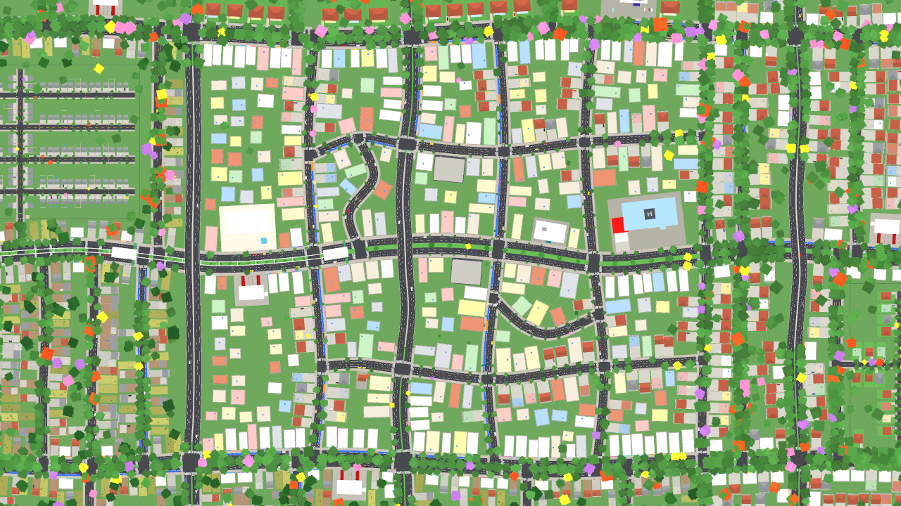
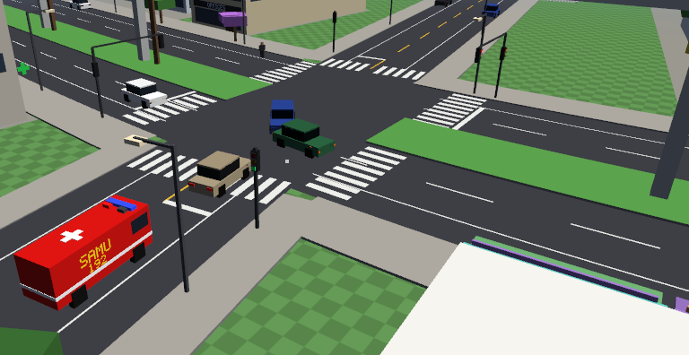
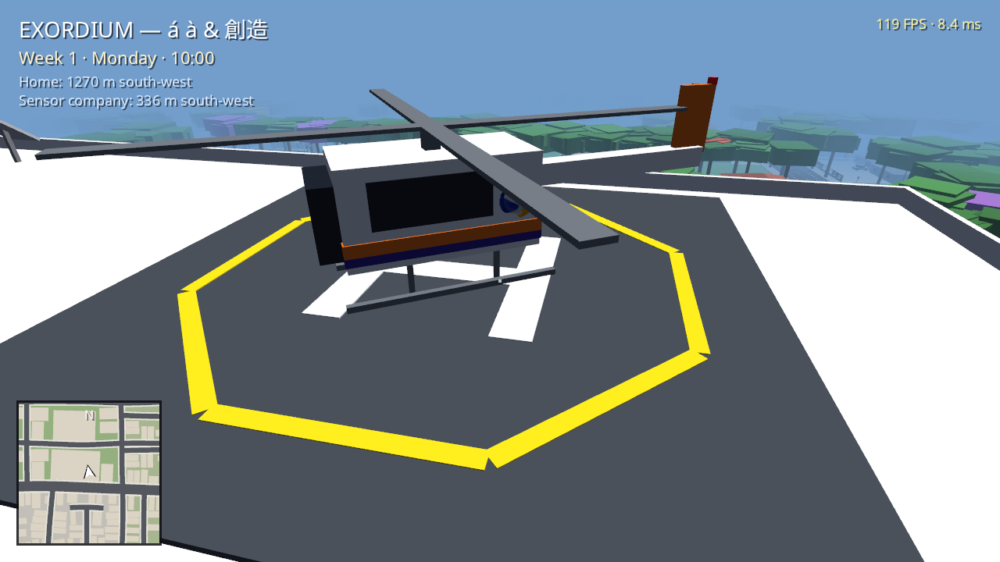
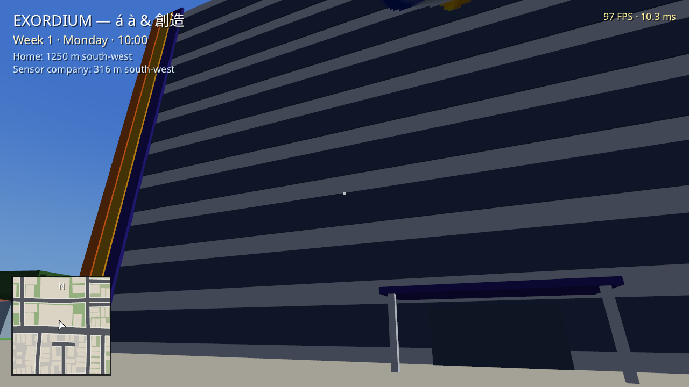

EVERYDAY LIFE IS THE GAME.
THE EXTRAORDINARY LIES WITHIN THE ORDINARY.
In SPRF (Springfield, New Kansas), you wake up on a free Sunday at 04:00 AM after a haunting nightmare. While paying utility bills, clocking into work, unjamming office printers, and negotiating industrial sensors, anomalous forces whisper through the city's static, insinuating that something inexplicable quietly looms over the metropolis.

Organic Metropolis of 1.4 × 1.24 km
From the dense commercial core with highway viaducts and the TV Maresol tower to the luxury gated estates of Alphaville, the public housing blocks of The Projects, and the quiet western suburbs where your rented home sits.
The 4 Pillars of EXORDIUM
Inspired by Sub Rosa, Hard Time, Serial Experiments Lain, and Evangelion.
Everyday Life Matters
Jobs, utility bills, and genuine workplace camaraderie are the game, not mere breathers between missions. Every profession features deep tactile mechanics and routines modeled after authentic workplace demands.
DEEP JOB MINIGAMESThe World Lives Without You
Every social circle (office coworkers, family, clients, and neighbors) is a self-sustaining microcosm that continues simulating its daily routines, even when you make different choices elsewhere in town.
OVER 500 CITIZENS WITH SCHEDULESReal & Punitive Consequences
The obsessive attention to urban detail of a GTA, but strictly punitive. If you cause a traffic accident and flee more than 20 meters from the victim, your fine is multiplied severely by the penal code, making you a wanted fugitive.
STRICT PENAL CODEThe Extraordinary in the Ordinary
Feverish dreams beneath the Magellanic Clouds, denpa signals whispering through analog television static, and the dilemma between grasping the inexplicable or preserving the city through the cold clarity of intelligence, routine, and bureaucracy.
ORIGINAL CANONICAL SOUNDTRACKSPRF: The City Speaks to You
Instant glimpses into daily life across the metropolis. Click on any screenshot to expand into high-resolution view.

"Why did this new hire suddenly start delivering so much out of nowhere? Beware the 'flash in the pan'... Coming in burning with energy just to get past the probation period, only to slack off right after. I've got my eyes on you!"

"Every station in our city follows one golden rule: the mascot is always an adopted black cat. Between dispatches, the crew trains courtyard rescues. Look at that! Our 23-meter Turntable Ladder truck just cleared mechanical inspection!"


"Collision alert on Main Avenue! Civilian cars parting ways as our ambulance cuts through red lights. If whoever caused this crash runs more than 20 meters from the victim before medical units arrive, the infraction is aggravated by hit-and-run and the fine is multiplied, and police will track you down right at your desk!"


"The buses in SPRF operate with clockwork precision! Our lines run strictly according to the timetable posted on the sidewalk totem. If you miss the morning departure, just check the sign to see when the next car pulls in. Our routes cut across the entire city, linking the outer suburbs to the main terminals and dropping passengers right at the front doors of downtown businesses and offices!"


"When the main transmitter of TV Maresol enters maintenance during the small hours of the morning, something inexplicable begins leaking across the off-air channels. These aren't normal broadcasts... There are whispers beneath the analog static and thermal anomalies registered by sensors in the blind spots of the city. Many ignore it and sleep through to clock in early. But whoever has bolted awake at 04:00 AM knows: something is watching the metropolis."
